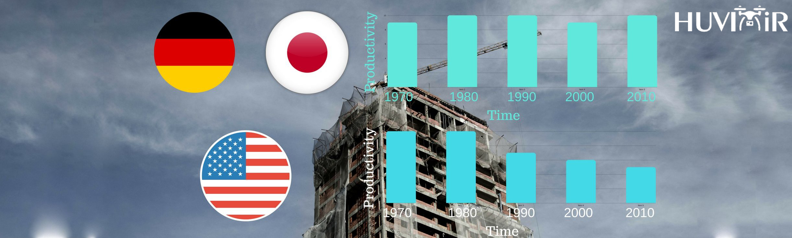
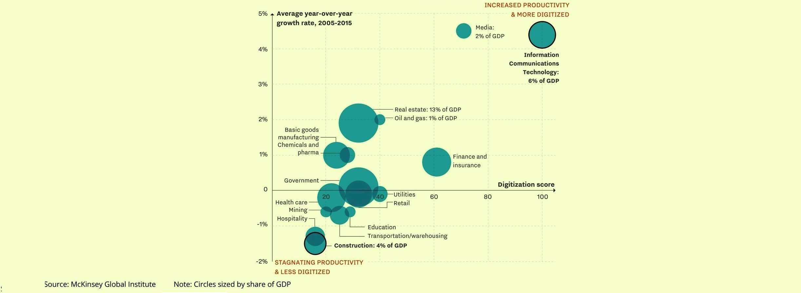
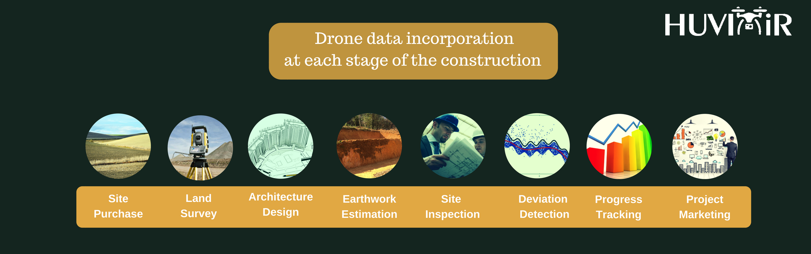
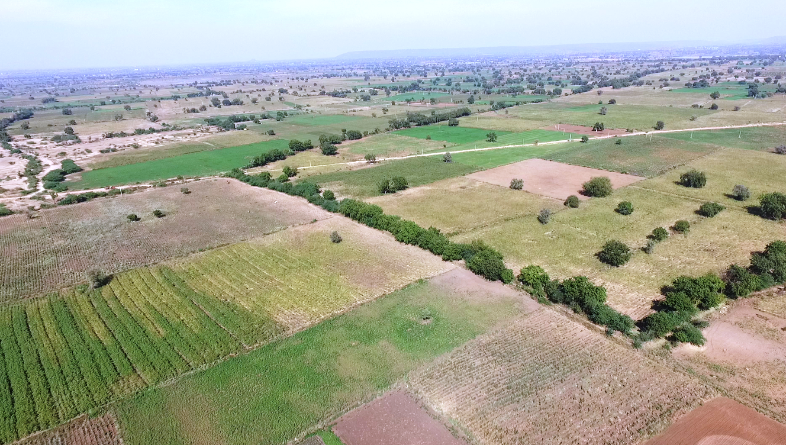
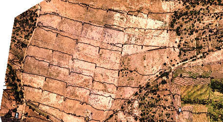
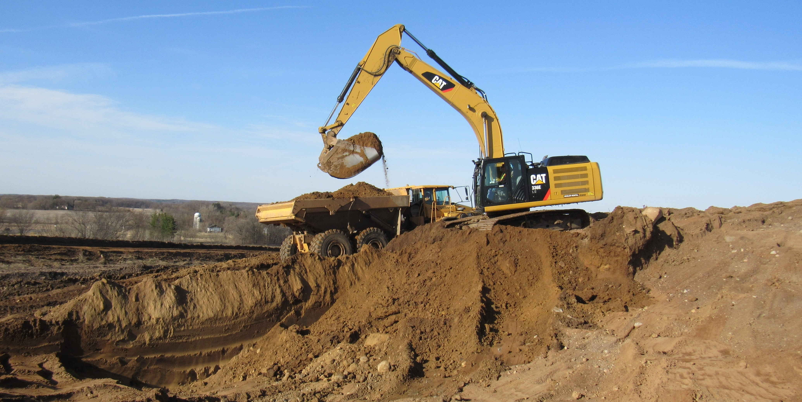
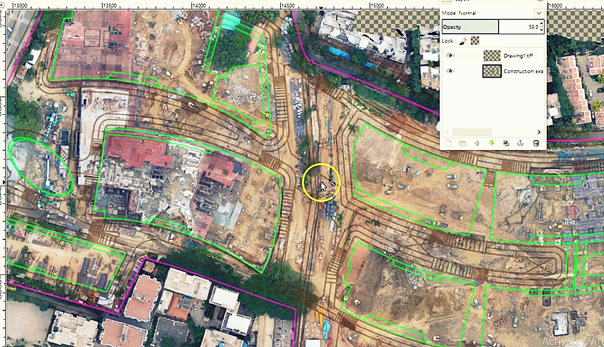
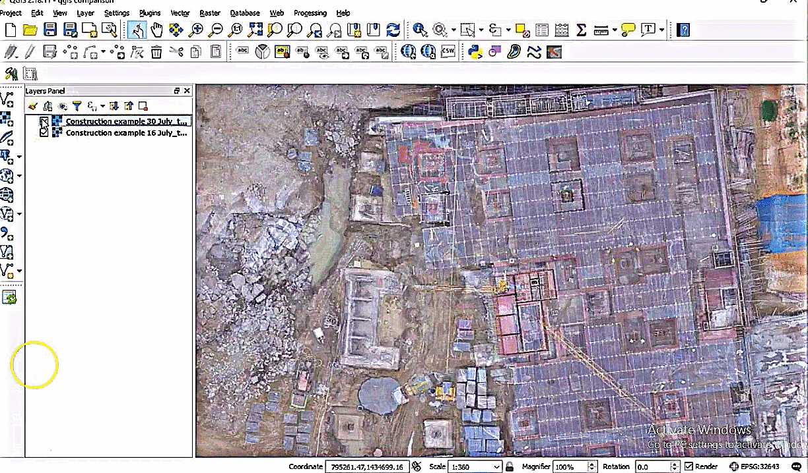

Using Drone Data at Each Stage of a Construction Project
There’s a lot of talk about how drones have the potential to transform operations across various industries.
In this blog, we will focus our attention on the application of drones in the construction industry. We will cover the current status of the construction industry, the challenges and opportunities for the adoption of drone technology and finally how drones can be used to overcome some of the issues it faces.
According to McKinsey, a world renowned consultancy firm, the construction industry has the lowest productivity gains over the years, in comparison to any other industry.
While Germany and Japan have seen no growth in productivity, the USA’s productivity has plunged by half since the late 1960s! Large projects take 20% longer to finish and run up to 80% over budget.

They note that one of the major reasons for the drop in productivity is the low level of new technology adoption. McKinsey compared U.S. industries in how much they spend on technology and how extensively they use computers in their operations using a digitization index of 1 to 100, with 100 being the most digitized. Here we see that the construction industry is clearly at the bottom of the list.

Amongst the measures that McKinsey suggests for solving these problems, the number one solution is using higher definition surveying and geolocation.
All this and more can be achieved very well using drones. Drone data can be applied at each stage of the construction life cycle to increase accuracy, reduce cost and save time.
A commercial drone costing nothing more than $1500, coupled with appropriate sensors, software applications for flight automation, data capture processing and analysis can bring in a sea change in efficiencies and reduction in cost across all phases of a construction project.

Drones can play a huge role in generating outputs that help in the following stages of the construction life cycle:
|
Property purchase decision making Aerial images and videos of the properties and surroundings cut short the time and provide comprehensive information to help with deciding on purchasing a property.

|
|
Land surveying Overlapping aerial images processed with photogrammetry software provide a lot more outputs than traditional land surveying techniques, at a fraction of the time and cost.

|
|
Property layout and architecture designing Photogrammetry outputs such as orthomosaics, 3D models and digital surface models, along with aerial videos and images help architects with taking their layout and architecture designs to the next level! |
|
Earth work estimations and stockpile volumetric analysis Photogrammetry outputs like point clouds and digital terrain models enable precise volume calculations of earthwork estimations and stockpile calculations.

|
|
Construction deviation and issue tracking Overlays of the orthomosaic with site drawings help with detecting deviations and taking early corrective action.

|
|
Construction progress tracking and inspection Drones enable quick and automated site inspections. Comparing orthomosaics across various dates enable precise progress tracking and reporting.

|
|
Construction site asset and inventory management Counting of various site assets using orthomosaics helps with speed tracking the inventory management process.  |
|
Property marketing Beautifully captured aerial videos and images of completed projects are great material to use in the property marketing process.  |